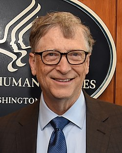

 William Henry "Bill" Gates III (sinh ngày 28 tháng 10 năm 1955)[4] là một doanh nhân người Mỹ, nhà từ thiện, tác giả và chủ tịch tập đoàn Microsoft, hãng phần mềm mà ông cùng với Paul Allen đã sáng lập ra. Ông luôn có mặt trong danh sách những người giàu nhất trên thế giới.[5] và là người giàu nhất thế giới từ 1995 tới 2014, ngoại trừ tháng 3/2013, 3/2012, tháng 3/2011 (hạng 2) và 2008 khi ông chỉ xếp thứ ba.[6]Tháng 5 năm 2013, Bill Gates đã giành lại ngôi vị người giàu nhất thế giới. Gần đây, ông là người giàu thứ hai thế giới với tổng tài sản 105,3 tỷ đô la Mỹ.[7] Ở Microsoft, Gates làm CEO và kiến trúc sư trưởng phần mềm. Ông là cổ đông cá nhân lớn nhất của Microsoft cho tới tháng 5 năm 2014.[8] Ông cũng là tác giả và đồng tác giả của một số cuốn sách. Gates là một trong những doanh nhân nổi tiếng về cuộc cách mạng máy tính cá nhân. Mặc dù có nhiều người ngưỡng mộ ông, song nhiều đối thủ cạnh tranh đã chỉ trích những chiến thuật trong kinh doanh của ông, mà họ coi là cạnh tranh không lành mạnh hay độc quyền và công ty của ông đã phải chịu một số vụ kiện tụng.[9][10] Trong giai đoạn gần cuối của sự nghiệp, Gates theo đuổi một số nỗ lực từ thiện, quyên góp và ủng hộ một số tiền lớn cho các tổ chức từ thiện và nghiên cứu khoa học thông qua Quỹ Bill & Melinda Gates, được thành lập năm 2000. Gates đã thôi giữ chức giám đốc điều hành của Microsoft từ tháng 1 năm 2000 nhưng ông vẫn còn là chủ tịch và kiến trúc sư trưởng về phần mềm tại tập đoàn. Tháng 6 năm 2006, Gates thông báo ông sẽ chỉ giành một phần thời gian làm việc cho Microsoft và giành nhiều thời gian hơn cho Quỹ Bill & Melinda Gates. Bill dần dần chuyển vị trí kiến trúc sư trưởng sang cho Ray Ozzie, và vị trí giám đốc chiến lược và nghiên cứu sang cho Craig Mundie. Ngày làm việc toàn phần cuối cùng dành cho Microsoft của Gates là ngày 27 tháng 6 năm 2008. Ông vẫn còn giữ cương vị chủ tịch Microsoft nhưng không điều hành hoạt động tập đoàn.